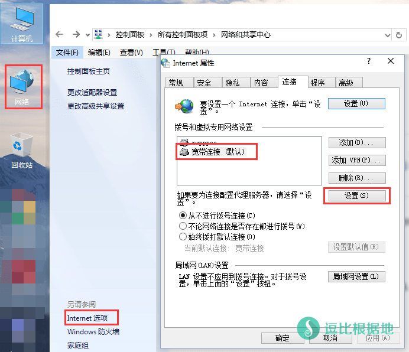
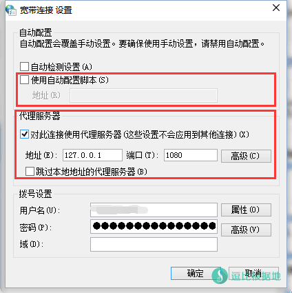
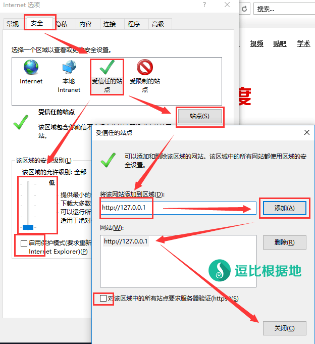
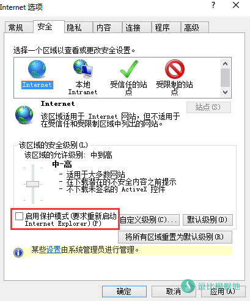
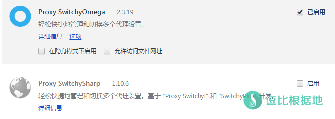
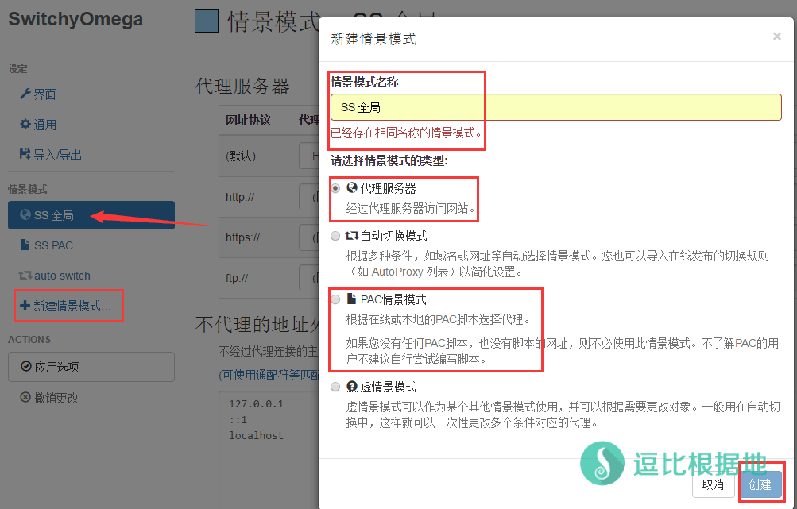
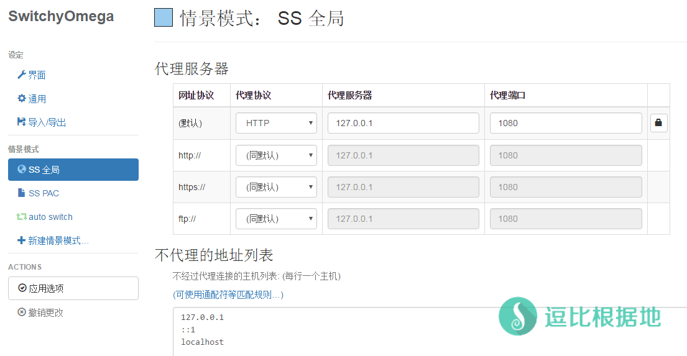
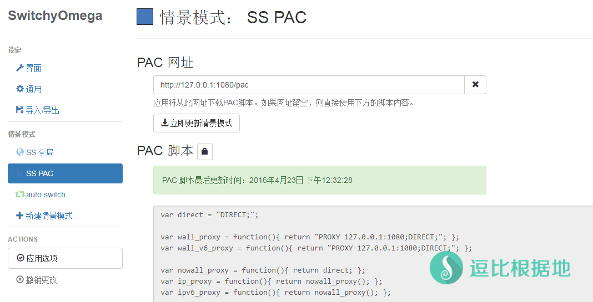
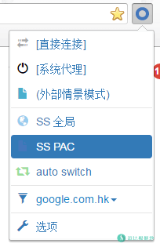

每一个使用过Shadowsocks的人，几乎都会出现过Shadowsocks突然无法使用的情况，然而很多人并不知道怎么办，网上的问题解决方法都是一个个的，不利于新手解决问题，所以我就写一个Shadowsocks无法使用后的简单排除方法。
本教程不一定能 100% 帮你解决Shadowsocks无法使用的问题，但是肯定会有帮助的。
如果你看了本文章 还是无法使用，那么请 Telegram (TG使用教程) 联系我解决或者远程协助。
注意远程协助的前提是：确定SSR账号在当前网络中能使用（同一网络其他设备链接正常）、确定SSR客户端中的SSR账号填写正确、而且仅限 Windows 系统远程。
1、确认Shadowsocks账号可用
在开始阅读本教程之前，你的第一步就是先确认你的Shadowsocks账号是否可用（这步很重要！），建议让其他人链接试试，或者其他设备链接试试。
如果别人能用，你却不能用。那就很明显是 你本地电脑设置问题 或者 Shadowsocks客户端 问题。请看 2、本地问题
如果别人都不能使用。那就说明是 Shadowsocks服务端 或者 VPS 问题。请看 3、服务器问题
如果你的ShadowsocksR账号是自建的，同时没有其他设备或者不想让其他人使用，那么可以看这个文章：
点击展开 查看更多
还有，可以打开ShadowsocksR的服务器连接统计 窗口，然后查看当前服务器信息的 实下载/错误/超时/空连 等数据来简单判断问题大概在哪里。
- 如果当前SSR服务器配置了SSR协议（非原版origin），有数据显示则表示配置是正确的，如果一直为零 0 ，则表示一定有错误。
- 网络错误：连接被拒绝，一般是当前（账号）服务器配置的 端口不正确、防火墙没有开放端口 等导致的。
- 协议错误：返回数据校检错误，当前（账号）服务器配置的 SSR协议/混淆插件 不正确导致的。
- 超时：一般是当前（账号）服务器未开机、没有网络等导致链接服务器超时。
- 空连：空连表示链接后无返回数据，一般是当前（账号）服务器配置的 密码或加密方式 不正确导致的。
如果浏览器打开谷歌网站 什么数据都没显示，那说明浏览器根本就没有走代理。
2、本地问题
再确认别人可以使用你的Shadowsocks账号后，那问题就是 你本地电脑设置问题 或者 Shadowsocks客户端 问题。那么我们就一个个排除。
2.1、Shadowsocks客户端问题
点击展开 查看更多
首先，请尽量使用最新的Shadowsocks客户端，鉴于目前 Shadowsocks v3.0原版 因为作者喝茶已经停止更新很长时间了，推荐使用 目前在持续更新的 ShadowsocksR 客户端（很多人换了ShadowsocksR后就可以使用了）。
下载地址：逗比 · 云
对了，还有一点。Shadowsocks账号信息 记得检查一下，说不定多了个空格或者符号，这都会导致无法连接Shadowsocks。
同时，ShadowsocksR 只做了很多 其他的辅助功能，这些功能如果你不需要的话，请不要修改。否则一些设置不正确也会导致无法连接。
如果你用的是 ShadowsocksR 客户端，那么记得检查下 SSR客户端服务器链接统计窗口中的 [开关列] 是不是红色的，红色代表禁用该账号，双击红色即可变成白色启用该账号。
2.2、本地电脑设置问题
很多人，都不会去使用过时的 IE 浏览器。那么，先使用一下 IE 浏览器 访问 Google.com ，如果可以访问，那么就直接看 2.2.5、浏览器问题
2.2.1、Shadowsocks 软件权限问题
点击展开 查看更多
Shadowsocks 启动系统代理后，就会去修改注册表来设置 系统代理设置。
而一些电脑系统或者非管理员用户（比如网吧），可能因为没有相应的权限 导致 Shadowsocks 启动系统代理 后无法修改注册表。
这时候就需要用 管理员权限 启动 Shadowsocks 客户端。
如果是网吧的话，是限制不能修改注册表的，而且也没有相应的权限，所以建议使用 SSCap客户端：逗比 · 云
如果确定不是 软件权限问题导致的，那么请继续看下面。
2.2.2、系统代理设置问题
点击展开 查看更多
2.2.1 说了，Shadowsocks 启动系统代理后，就会去修改注册表来设置 系统代理设置。
那么，在启动后，请打开 系统代理设置 看一下是否正确设置代理。
右键桌面上的网络 >=> 属性 >=> Internet 选项 >=> 连接 选项卡 >=> 选择你使用的拨号链接 >=> 设置

然后你是 直接电脑连接 猫 拨号上网的用户，就如上图所示打开下图的窗口。
如果你是 路由器连接 猫 上网的用户，就点击上图所示中 下面的 局域网设置 打开下图的窗口。
下图中 上面 红框圈中 的选项是，Shadowsocks客户端的PAC模式
一般正确的格式是(xxxx为示例)：http://127.0.0.1:1080/pac?t=xxxx
下图中 下面 红框圈中 的选项是，Shadowsocks客户端的全局模式
一般正确的格式是：地址：127.0.0.1，端口：1080。
如果，你的下图设置是 空的或者是不正确的（127.0.0.1 是不能变的，端口是可以变的），请修改为正确的IP和端口，并检查Shadowsocks客户端的本地端口设置。
注意：这里的端口既是 Shadowsocks中的 本地端口，是可以改的，不过默认是 1080。

2.2.3、无法保存 PAC/全局 代理设置
点击展开 查看更多
当你在上个步骤中发现 设置完 PAC/全局 代理后，再打开设置就发现刚才设置的代理内容不见了(恐怖)，那么可能是因为 IE的站点保护模式问题。
打开IE浏览器，在顶部菜单栏 — 工具 — Internet 选项 — 安全选项卡 — 受信任的站点 中 安全级别调至[低] 并 取消 启用保护模式的勾选，然后点击 [站点] 按钮，如下图所示添加 http://127.0.0.1 到受信任的站点列表中并点击 [关闭] 按钮。最后重启 IE浏览器返回上个步骤设置代理查看是否正常保存。

2.2.4、Internet 保护模式
点击展开 查看更多
当你系统代理设置正确(就是上个步骤)，但是使用IE浏览器依然无法链接SS，那么可能是因为 IE的保护模式问题。
打开IE浏览器，在顶部菜单栏 — 工具 — Internet 选项 — 安全选项卡 中取消 启用保护模式的勾选，然后重启 IE浏览器尝试是否正常。

2.2.5、浏览器问题
点击展开 查看更多
如果上面的情况都解决了，依然无法使用Shadowsocks的话，估计是浏览器问题了。
大多数浏览器都是默认使用系统代理的，比如：Chrome、Opera等浏览器。
同样，也有一些浏览器是有单独的代理设置 选项，比如：Firefox和国内的几个浏览器。
请自己检查浏览器的 代理设置 是否为 使用系统代理设置，如果不是就改为 使用系统代理设置。
如果没有这个 代理设置选项 或者已经改好了，那么就检查 浏览器扩展。
比较常见的以 Chromium为内核的浏览器，比如：Chrome、Opera、国内的一些所谓的双核/极速浏览器。
都经常会使用以下两个插件来管理代理设置，Proxy SwitchyOmega、Proxy SwitchySharp，因为这两个插件会 接管 浏览器的代理设置，如果设置错误或者不会使用的话，也会导致 Shadowsocks 无法使用，所以可以暂时禁用这两种插件。

2.3、本地电脑时间与服务器差距太大
如果你使用的是ShadowsocksR账号，并且你本地电脑设备的时间错误，可能会导致无法连接账号，表现特征为：账号确定可用，但是ShadowsocksR客户端的服务器链接统计窗口[报错]列会显示数字，不会提示[超时]和[空连]。
这种情况只需要根据北京时间校准一下本地电脑设备的时间即可（不需要在意时区，只要客户端和服务端的系统时间都是各自时区的标准时间，那么就行了，因为各个时区的标准时间实际是都是同一时间，只是因为时区不同而显示的时间不一样，并不是美国活在我们的昨天），各个协议对时间的误差要求不一样，所以建议与北京时间（如果你不是国内那么请对照你的时区来修改为时区标准时间）一致。
如果在确认Shadowsocks账号可用的情况下，以上的几种方法依然无法解决问题，请联系我 Telegram。
3、服务器问题
服务器引起的问题就比较麻烦，通过教程很难说清，首先检查一下 VPS IP 是否被墙，接着查看 Shadowsocks服务端 日志是否出错，然后检查 Shadowsocks是否运行正常，同时看一下防火墙是否允许了 Shadowsocks的端口，最后还是不行就 重装Shadowsocks服务端 试试，条件允许情况下，最好直接重装VPS系统，避免是其他软件影响了Shadowsocks的运行。我们一条一条解决。
3.1、检查 IP 是否被墙
点击展开 查看更多
检查 IP 是否被墙很简单，只要用一下 站长工具-超级Ping 功能检测一下，如果发现国内全部 Ping超时 ，其他国家 Ping正常，那就说明 IP 被墙了，反之没有被墙。
3.2、检查 Shadowsocks服务端 日志
点击展开 查看更多
各个 Shadowsocks服务端 版本的日志文件略有不同，如果你是使用我网站提供的 Shadowsocks 服务端安装教程，那请去对应的教程里查看 日志文件 位置。
然后通过 对应的命令代码 打开Shadowsocks日志信息，然后查看是否有异常，比如 [Error] 开头的日志，因为这类问题 繁多并且复杂，出现问题请留言，当然我也只能解决常见的问题，复杂一些的建议去 Github（ShadowsocksR） 问Shadowsocks服务端作者。
3.3、检查 Shadowsocks服务端是否运行正常
点击展开 查看更多
通过你安装的Shadowsocks版本，在上面找到对应的 查看Shadowsocks服务 运行状态的命令。
然后，通过 netstat -lntp 查看端口使用情况，看一下 Shadowsocks的端口是否 正常被 Shadowsocks自身 占用。
如果被其他程序占用，可以尝试修改 Shadowsocks 端口 或者 关闭占用 Shadowsocks端口的 程序。
3.4、检查 VPS iptables 内部防火墙规则是否开放端口
点击展开 查看更多
首先查看一下iptables防火墙规则，看看是不是把 Shadowsocks的端口堵住了，如果你的VPS并没有什么重要的防火墙规则，那就可以直接 关闭防火墙 或者 清空防火墙规则。
当然，如果你的VPS上面放的有网站（一般lnmp安装完都会把非必要端口外的端口全部封掉）或者其他的程序，你就需要 添加开放端口规则。
# 查看iptables防火墙规则
iptables -L
# 清空iptables防火墙规则，注意，一些VPS使用后会导致无法连接VPS！！
iptables -F
# 添加iptables防火墙开放 TCP/UDP 端口规则
iptables -I INPUT -p tcp --dport 端口 -j ACCEPT
iptables -I INPUT -p udp --dport 端口 -j ACCEPT
# 关闭防火墙
service iptables stop
# 以上四个命令不是按顺序执行，而是根据需求执行！
3.4、检查 VPS 外部防火墙规则是否开放端口
在一些IDC中，例如：阿里云、腾讯云、微软云、谷歌云、亚马逊云等都有外部防火墙（名字一般叫 安全组 规则组），也就是可以在他们的管理面板中有个独立于VPS内部防火墙的外部防火墙，你可能开放了VPS内部防火墙，但是没开放对应的外部防火墙，这也会导致无法连接Shadowsocks端口。
3.5、看一看作者写的服务器常见问退排除
点击展开 查看更多
3.6、重装Shadowsocks服务端
点击展开 查看更多
到这一步基本就是死马当活马医了，一些问题实在找不到，那就干脆重装 Shadowsocks服务端。
条件允许情况下，最好直接重装VPS系统，避免是其他软件影响了Shadowsocks的运行。
如果以上方法都无法解决，那么更多的请查看Wiki：https://github.com/breakwa11/shadowsocks-rss/wiki/服务端常见问题排查
其他情况
Shadowsocks启动代理后提示“无法修改注册表”
点击展开 查看更多
一些人会出现Shadowsocks启动代理后提示“无法修改注册表”的问题，大多数情况下是发生在网吧等特殊环境下，有一些软件限制了注册表修改功能。
上面说了，Shadowsocks启动代理后，先是占用1080（默认）端口，然后把Shadowsocks流量映射到127.0.0.1:1080上面，然后在去设置 系统代理设置。而设置 系统代理设置需要修改注册表，所以就会出现上面这个问题。
真个问题有两种解决办法，一种是找到限制注册表修改功能的软件并关掉；
一种是 避开这个问题，通过浏览器扩展去管理代理设置，我们这里就讲这个方法。
当然你也可以试一试 SSCap客户端：逗比 · 云 ，这个客户端启动不需要修改注册表来设置系统代理。
比较常见的以 Chromium为内核的浏览器，比如：Chrome、Opera、国内的一些所谓的双核/极速浏览器。
都经常会使用以下两个插件来管理代理设置，Proxy SwitchyOmega、Proxy SwitchySharp。我推荐前面那个。
进入扩展的选项页面，然后点新建情景模式>=>输入情景模式名称>=>选择代理服务器>=>点击创建（这个是SS全局的，需要SS PAC模式的请选择PAC情景模式）

然后SS全局和SS PAC的设置如下：
全局：代理服务器：127.0.0.1，端口：1080
PAC：PAC网址：http://127.0.0.1:1080/pac
当然，这里以默认的1080端口为例，如果不是就自己改。设置完点应用选项，就可以使用了。


在浏览器的右上角点击Proxy SwitchyOmega扩展图标，选择你需要的全局还是PAC（这时候Shadowsocks客户端不需要去设置对应的全局/PAC），就可以正常使用了。

好了，大概我就想到这么多了，有什么建议或者需要补充的 请在下面评论里留言！
转载请超链接注明：逗比根据地 » Shadowsocks无法使用后的简单排除方法
责任声明：本站一切资源仅用作交流学习，请勿用作商业或违法行为！如造成任何后果，本站概不负责！


你联通网络下，TCPing 测试一下代理端口试试是否通顺，Windows 使用 TCPing 工具来获取 TCP延迟、端口通顺情况、已禁Ping服务器的延迟
评论里说不清，请 Telegram群组(TG使用教程)私聊联系我远程协助。
下载远程协助软件，打开即用，无需安装，打开后邮件告诉我软件中间的数字。
https://softs.host/Other/AnyDesk.exe
评论里说不清，请 Telegram群组(TG使用教程)私聊联系我讨论解决。
墙检测到你的服务器可能是代理服务器时，就会TCP回程阻断，可能是封锁单个端口，也可能是22 80以外端口封锁，也可能是全部端口封锁。
你可以用 tcping 来测试端口：Windows 使用 TCPing 工具来获取 TCP延迟、端口通顺情况、已禁Ping服务器的延迟
使用任何服务器都是这样吗？
你可以用 tcping 来测试SSH端口：Windows 使用 TCPing 工具来获取 TCP延迟、端口通顺情况、已禁Ping服务器的延迟
是SSR客户端无法启动？还是浏览器提示错误，提示什么？还是SSR客户端服务器链接统计报错？[错误/超时/空连]
如果是SSR的话，http_simple混淆+80端口 或 tls1.2_ticket_auth混淆+443端口试试。